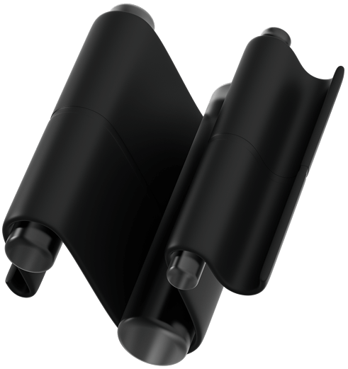

What BluTag actually does
Your fleet, one map
Vehicles, trailers, tools, generators and site equipment across every yard, in a single view.
Location without a SIM
Positions arrive over Apple's Find My network. No cellular contract, no gateway to install, nothing to top up.
History and Excel export
Up to 30 days of positions per query, filtered by accuracy, exported to Excel for insurance and audit.
Alerts that matter
Know when a tag has gone quiet for 48 hours, or when a beacon is reaching the end of its life.
Webhooks and integrations
Signed webhooks with delivery logs, plus an outbound location feed into the fleet system you already run.

Someone else's phone
does the work
Your beacon broadcasts an anonymous public key for two seconds, every fifty seconds. Any Apple device that passes encrypts its own position against that key and forwards it to Apple. We collect the report and decrypt it with a private key that never left your hands, which is why Apple cannot read where your fleet has been, and neither can we.
Read the technical write-up
Four things worth knowing

01
Attach and forget
Mount the beacon on a vehicle, trailer or generator. No wiring, no installer, no SIM to activate.
02
Encrypted end to end
Reports are encrypted to a key only you hold. Apple cannot read them. Neither can we.
03
Passing phones report in
Any nearby Apple device relays an encrypted fix. Busier ground means more frequent updates.
04
Told when it goes quiet
We raise an alert when a tag stops reporting for 48 hours, or reaches battery end of life.
The honest limits
of finder-network tracking.
~5 min refresh interval
Tunable from 1 minute to 24 hours per organisation. That is how often we poll Apple, not a live feed from the tag.
A phone has to pass
A position only exists once an Apple device walks or drives past. Frequent in town, sparse in a locked remote yard.
±metres not a pinpoint
Every fix carries an accuracy radius and a confidence score. We show you both, and let you filter to the best of them.
30 min to first report
After you attach and provision a new beacon, allow up to half an hour before its first position lands.
Not GPS no live trail
You get discrete position fixes. There is no continuous breadcrumb, and no live speed or heading feed.
30 days of history per query
Export any window up to 30 days. A parked asset records a position, rather than a minute-by-minute dwell series.

Get every single
answer
Each beacon broadcasts an encrypted Bluetooth identifier. Apple devices that pass by pick it up and relay an encrypted position on your behalf, over what Apple describes as a network of hundreds of millions of devices worldwide. There is no cellular radio in the tag, so there is no contract to sign and nothing to pay monthly.
Work and private vehicles, trailers, plant, generators, packages and hand tools. Anything you would rather not lose, and would like to find again. BluTag is built for tracking equipment, not people.
Yes. Provision a key in the dashboard, attach the beacon to the asset, and you are done. It takes minutes, needs no professional installation, and nothing has to be wired into the vehicle.
We poll Apple roughly every five minutes by default, and you can tune that per organisation between one minute and 24 hours. But that is our polling rate, not the tag's. The position itself is only as fresh as the last Apple device that passed it, which might be moments ago in a busy depot or hours ago behind a locked gate.
Nothing reports, and we would rather tell you that up front. Coverage follows people: on roads, in towns and around depots it is excellent, but a tag sitting in a remote quarry with no foot traffic can stay silent until somebody visits. If you need positions from genuinely unpopulated ground, you need a cellular or satellite tracker instead of this one.
Only you. A position is encrypted on the passing phone against your beacon's public key, and can be decrypted solely with the matching private key. Apple relays data it cannot read. One caveat worth stating plainly: a beacon broadcasts a fixed public key, so anyone running their own scanner nearby could in principle recognise the same tag over time.
What we have shipped
Q4 2025
Alerting, signed webhooks, WhatsApp notifications and live dashboard updates
Q1 2026
Multi-tenant organisations, Find My tracking, Apple ID and 2FA, and the AI fleet assistant
Q2 2026
Batch fetching, weekly reporting, Excel export, fleet dashboard and outbound partner relay
Next
Geofence alerting, data retention controls and on-demand refresh for a single device